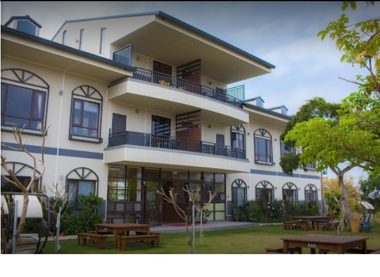
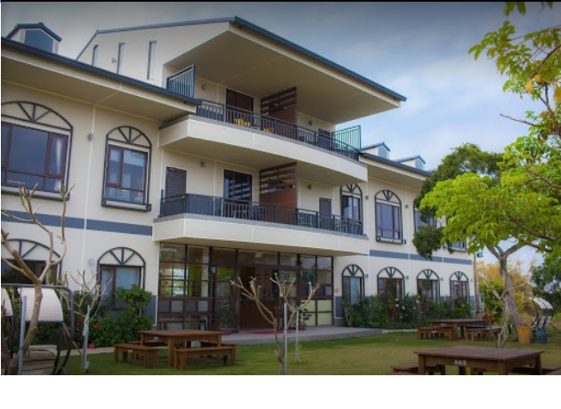

小琉球→
小琉球→
 民宿→

民宿→

台灣唯一的珊瑚島、唯一無東北季風之觀光勝地
杉福漁港
位置
琉球嶼位於高屏溪口之西南，東經一百二十度廿一分五十五秒，北緯廿二度十九分四十八秒，
即東港鎮西南海面約八浬，高雄市南南西方約十八浬之海上，孤懸海中狀似一隻飄浮於台灣海峽之鞋子，
為台灣本島附近十四屬島中唯一珊瑚礁島嶼。
地形
本嶼為一丘陸地，地形最高處稱為龜仔路山，海拔87公尺，素為航海者之指標。形勢東西狹窄，
東西最寬處僅2公里，南北長4.1公里，北部稍寬，南部較狹。島之長軸從東北伸向西南，周圍十三公里，
面積僅有6.8平方公里，全島被兩條交叉地塹切割成為四塊台地，一條走向東北至西南形成中央地溝，
為島中主要交通孔道（由白沙至海子口）；另一條走向西北至東南，通過島之中央，外形較不明顯，
為名符其實之剖腹山，故俗稱「剖腹山嶼」。
厚石群礁氣候
氣候溫暖乾燥，七月均溫最高27.9°C，三月均溫最低17°C，年平均雨量約一千毫米，六月最多平
均二六五七毫米，十二月最少，平均一．九毫米。本地每年夏秋之際多颱風侵襲，為全國颱風頻率最高處，
而本區更位於台灣能量最大、雨量最多之颱風路徑（約佔台灣颱風路徑百分之三十二左右）之中，
故此地之建築與設施均需考慮強風與巨浪之襲擊諸因素。
地質
本嶼是台灣屬島中，唯一的珊瑚島，表面被珊瑚石灰岩覆蓋，海岸被隆起的珊瑚礁圍繞。
石灰岩洞地形及珊瑚礁海岸地形遍佈全島，較著名的如烏鬼洞、美人洞、山豬溝等。琉球嶼珊瑚石
灰岩質與鳳山珊瑚石灰岩相似，琉球嶼之四塊台地表面，均被紅土質土壤所覆蓋，而呈紅土台地。
這些紅土係珊瑚石灰岩長期風化後之產物，其風化後之結果，使珊瑚石灰岩僅剩下不可溶性之
紅色氧化鐵、氧化矽等雜質，因而成為鮮明之紅色，全屬貧瘠乾燥之地不宜耕作。